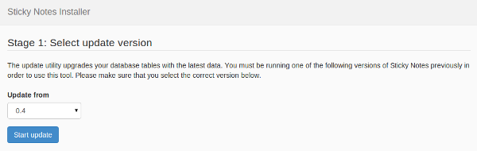

Sticky Notes v1 has a built-in hassle-free updater utility. This utility aims towards making your update experience quick and smooth.
Please make sure you backup your old Sticky Notes source files and the database before starting with the update process.
The update process is slightly different when upgrading from an older version of Sticky Notes prior to 1.0, and the update scenarios are discussed below. However, in both scenarios, you need to download the latest Sticky Notes version from here and extract the archive.
Overwrite the old Sticky Notes 1.x files in your web root with the contents of the download archive.
Move the old code files to any different location so that you are left with an empty directory. Now copy over the new 1.x files to your web root (or wherever your old code resided earlier). Follow the database configuration steps mentioned in the installation guide.
config.php
inside app/config folder before running the updater.
This is the simple part: all you need to do is visit http://yoursite.com
(your Sticky Notes site) and you should be automatically taken to the update utility.
Sticky Notes automatically detects the installed version. However, it is strongly
recommended that you verify that the correct version is selected.

At this screen, click on Start update and the installer will update your
database to the newest version.